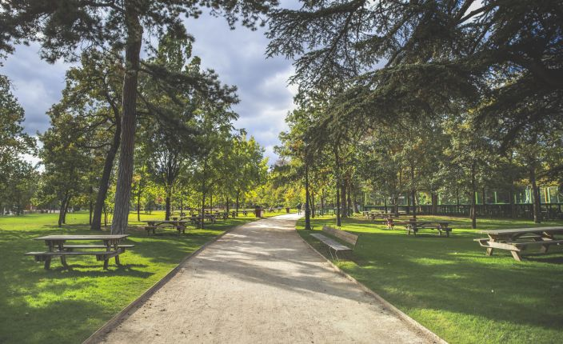
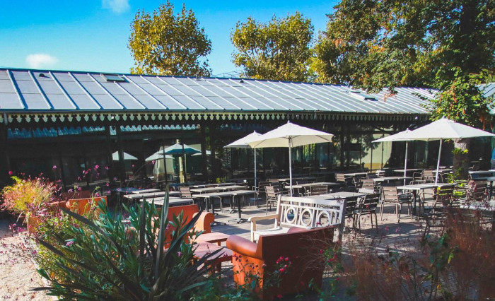

L’accueil | Le programme | Les orateurs | S’enregistrer | L’équipe | Le lieu
Pour la troisième année consécutive, le Paris JUG a le plaisir de vous inviter le 05 juin 2025 à une journée de présentations sur le thème : Java en 2025 et au-delà.
Ouverture des Places “early bird”
Vous pouvez dès à présent consulter la liste l’agenda de la journée, les titres des présentations et la liste des intervenants sur notre page Agenda.
Nous proposons 30 places au tarif “early bird” de 230 € pour les 30 premiers inscrits. Au-delà le tarif de la journée est sera de 265 €. Tout ceci inclut l’accès complet à l’espace de conférence, le petit déjeuner d’accueil, le déjeuner, et la pause café de de l’après-midi.
Les inscriptions via la formation professionnelle seront bientôt possible, grâce à OXiane Institut, notre partenaire formation pour cet événement. Vous pouvez prendre contact avec OXiane Institut à cette adresse pour plus d’informations : formation@oxiane.com.

Trois sessions le matin et trois l’après-midi. Nous terminerons par un panel avec les speakers.

Le logo Java Day™ est utilisé avec l’autorisation d’Oracle Corp.